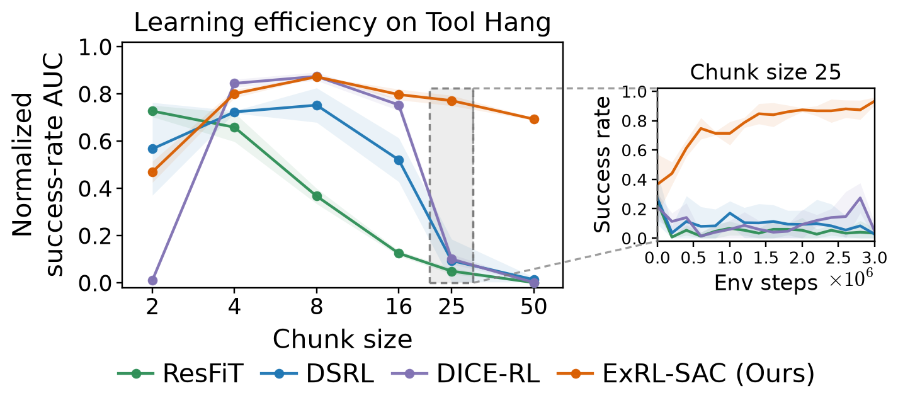
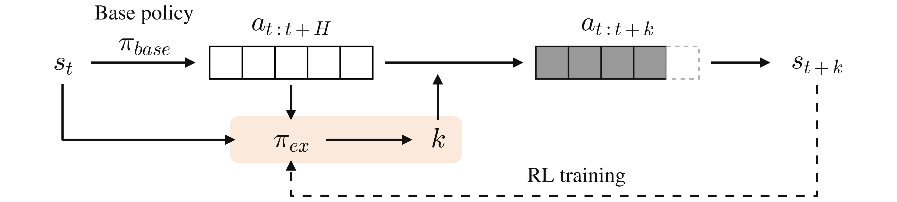
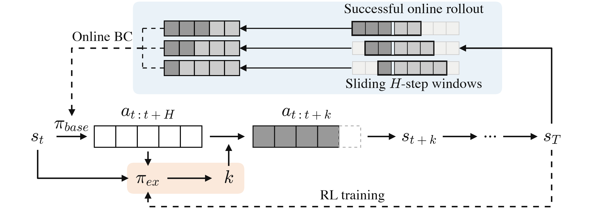
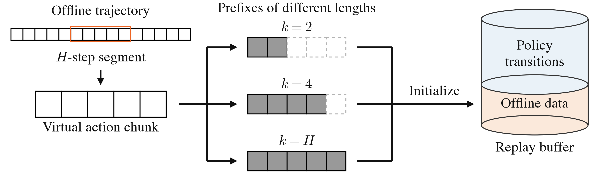
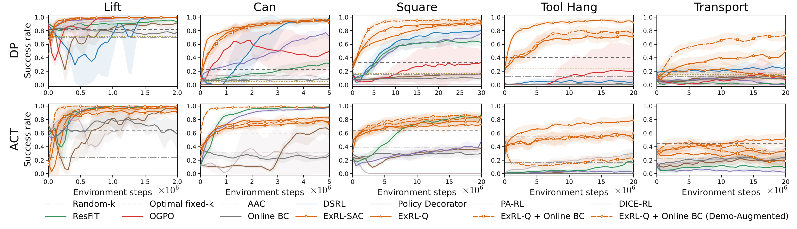
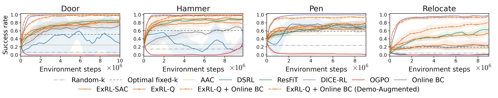
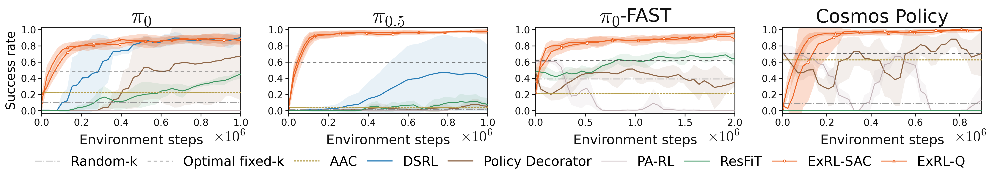
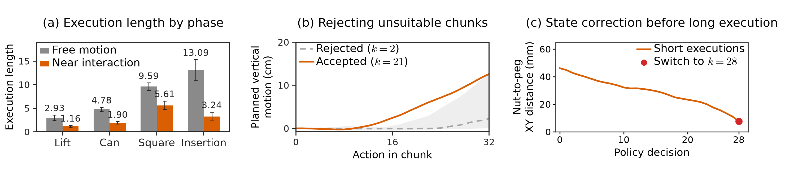
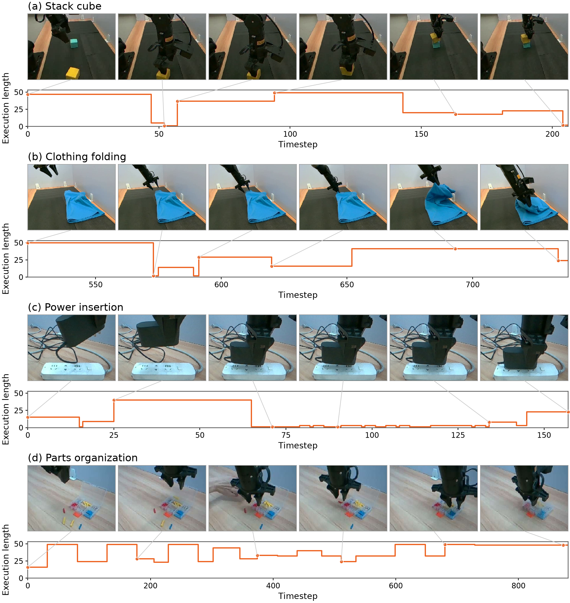

Abstract
Predicting long action chunks, often spanning dozens of timesteps, has become a key ingredient in increasingly capable robot policies. In this paper, we find that adapting these long-chunk policies with existing reinforcement learning (RL) methods can require many online samples due to the high dimensionality of the action chunks being optimized, making such adaptation impractical in real-world scenarios where interaction data are costly to collect. Our key insight is to shift adaptation from optimizing actions to optimizing how long to execute each predicted action chunk. This keeps the adaptation space low-dimensional while its expressivity grows with the chunk size. We thus introduce Execution at the Right Length (ExRL), a simple approach which augments the base policy with a lightweight adapter that predicts the execution length of each chunk and is trained using off-policy RL algorithms. Across simulation benchmarks and real-world robotic tasks, ExRL enables sample-efficient adaptation of a diverse range of long-chunk policies with minimal task-specific hyperparameter tuning.
Adapting \(\pi_{0.5}\) with ExRL
The challenge of adapting long-chunk policies
Many robot policies predict dozens of actions at a time to produce smooth, coordinated motion. Adapting these long action chunks with RL can be costly: methods that optimize entire chunks or their latent variables face a search space that grows with the chunk size. The Tool Hang results below show the resulting loss in sample efficiency. On a real robot, every extra trial adds to the time and cost of adaptation.

ExRL: learning execution length with RL
ExRL addresses this bottleneck by shifting RL to a single decision: how long to execute each predicted action chunk. Short executions let the robot correct its motion using a fresh observation; longer executions preserve useful motion within the chunk. As chunks get longer, the robot gains more choices for when to replan, while the adaptation space stays one-dimensional.

We train a lightweight execution policy with off-policy RL and task rewards. Given the current state and the base policy's predicted chunk, it chooses an execution length \(k\). The robot executes the first \(k\) actions, observes the new state, and asks the base policy for another chunk.
Improving the base policy with online BC
The successful rollouts produced by ExRL provide a way to improve the base policy itself. We use overlapping segments of executed actions as training chunks for behavior cloning (BC). This teaches the base policy to reproduce the successful behaviors discovered during online interaction.

Learning from offline data
We can also use existing trajectories, including human demonstrations, to reduce the need for new robot interaction. ExRL treats a recorded segment as a virtual action chunk: its prefixes show the outcomes of different execution lengths. These examples initialize the RL replay buffer and are reused alongside online experience.

Sample-efficient adaptation across robot policies
Learning execution length yields sample-efficient improvement across Robomimic, Adroit, and LIBERO. The same approach works with Diffusion Policy, ACT, \(\pi_{0}\), \(\pi_{0.5}\), \(\pi_{0}\)-FAST, and Cosmos Policy.
Diffusion Policy and ACT
On Robomimic, ExRL adapts policies with 50-action chunks, including challenging tasks such as Tool Hang and Transport. On Tool Hang with Diffusion Policy, ExRL exceeds 90% success while the other RL baselines remain around 20% or below.

Dexterous manipulation
On Adroit, ExRL adapts Diffusion Policy across four dexterous hand tasks. Distilling successful trajectories back into the base policy further improves learning.

Generalist robot policies
The same execution-length interface adapts flow-based VLAs, an autoregressive VLA, and a world action model. On LIBERO, ExRL improves \(\pi_{0.5}\) from nearly 0% to over 90% success within 200,000 environment steps.

Watching ExRL choose execution lengths
The rollouts below show how ExRL changes execution length as a task unfolds, from short adjustments to longer stretches of motion.
What does ExRL learn about action chunks?
Replan near contact: ExRL often uses longer executions during free motion and shorter ones near an object or target. In power insertion, it repeatedly replans near contact, then commits to a longer execution to finish inserting the plug.
Let useful chunks unfold: On Square, ExRL cuts short proposals with little predicted progress, then executes more of a chunk that contains a sustained grasp-and-lift motion. Short executions create opportunities for correction and a new prediction; longer executions preserve progress through a useful sequence.

On the real robot, stacking and folding combine short adjustments near grasping with longer lifting motions. In parts organization, longer executions carry much of the pick-and-place sequence forward.

BibTeX
@misc{luo2026exrlsampleefficientonlineadaptation,
title = {ExRL: Sample-Efficient Online Adaptation of Long-Chunk Policies
via Execution Length Control},
author = {Xu Luo and Jiaying Yang and Hao Wu and Junlin Xie and
Zijin Hong and Ji Zhang and Lianli Gao and Jingkuan Song},
year = {2026},
eprint = {2611.13482},
archivePrefix = {arXiv},
primaryClass = {cs.RO},
url = {https://arxiv.org/abs/2611.13482},
}